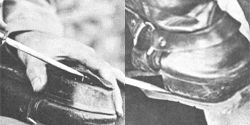

LEFT: Pry off the worn-out heel This one was cut from tread. You can see the tire card in the edge. RIGHT: Trace the heel. The thicker Part is at the rear to make up for wear at the back of the heel support.